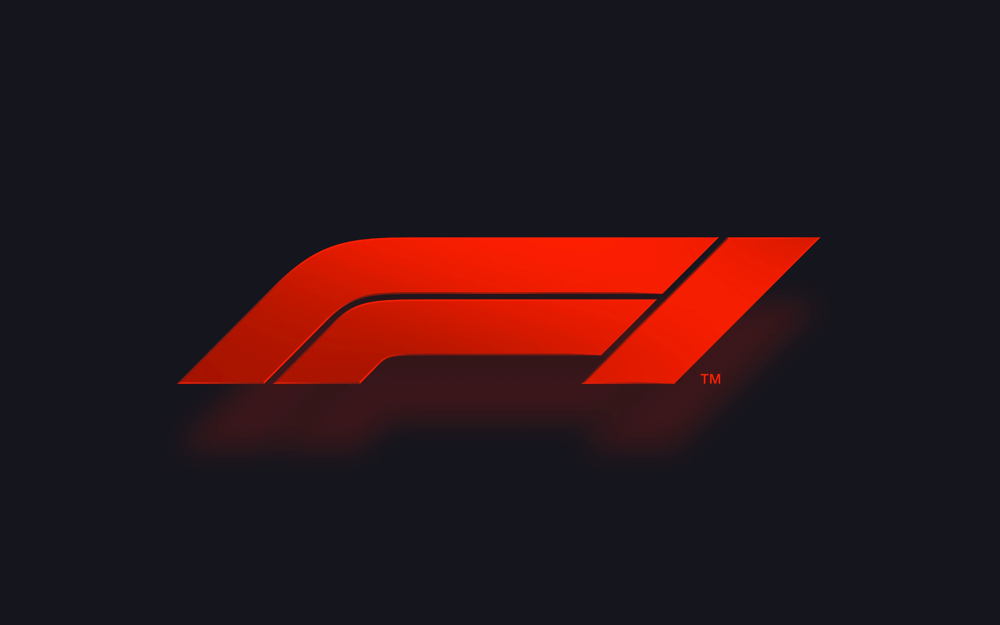

Scans your Gmail inbox with GPT-4o-mini to automatically detect co-op applications and status updates — surfacing confidence scores and reasoning for every classification.
Hi, I'm Ethan.
I'm a computer science student at the University of Waterloo, currently working as a Software Engineer Intern at Skrypt AI Labs. Outside of building things, I spend my time playing baseball, chess, and poker, or staying active through running and lifting. This site is where I share what I've been working on.
Hobbies
Baseball, Robotics, Chess, Poker, Running, Lifting, Coding
Status
Software Engineer Intern @ Skrypt AI Labs
// MISSION_LOG
Projects
Scroll to see projects.
Full-stack mind-mapping app across 4 Dockerized microservices with an AI insight engine that surfaces the top semantically related connections using OpenAI Embeddings + cosine similarity.
02 / 05

Nodality.ai
Open Source · 4 services
ReactNode.jsExpress.js
PostgreSQLDockerFastAPI
Services4
Endpoints8
InsightsTop 5
03 / 05

F1 Telemetry Analysis
Research · Notebook
PythonpandasFastF1
scikit-learnMatplotlib
Samples4,446
MAE0.223s
R²0.72
End-to-end pipeline analyzing F1 qualifying telemetry across 4,446 driver comparisons. Random Forest model predicts lap-time deltas, outperforming a hand-tuned weighted baseline.
A Chrome extension integrating the OpenAI API directly into Google Docs for context-aware text generation, delivered through chunked batchUpdate calls so the document stays in sync.
04 / 05

LazyPaste
Chrome Extension
JavaScriptOpenAI APIGoogle Docs APIOAuth2
Throughput240 WPM
AuthOAuth2

A learning site for chess enthusiasts — detailed endgame walkthroughs, interactive puzzles, and a curated library of classic games played by masters.
// END OF PROJECTS